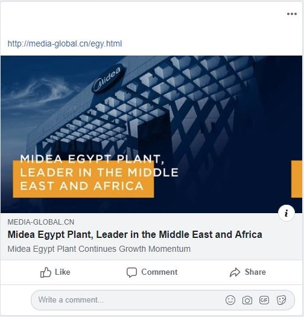
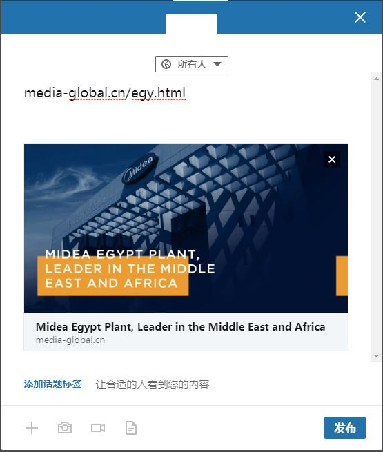
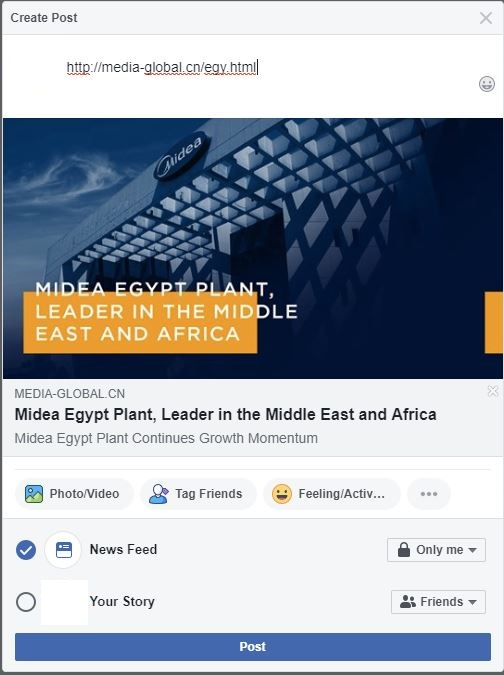
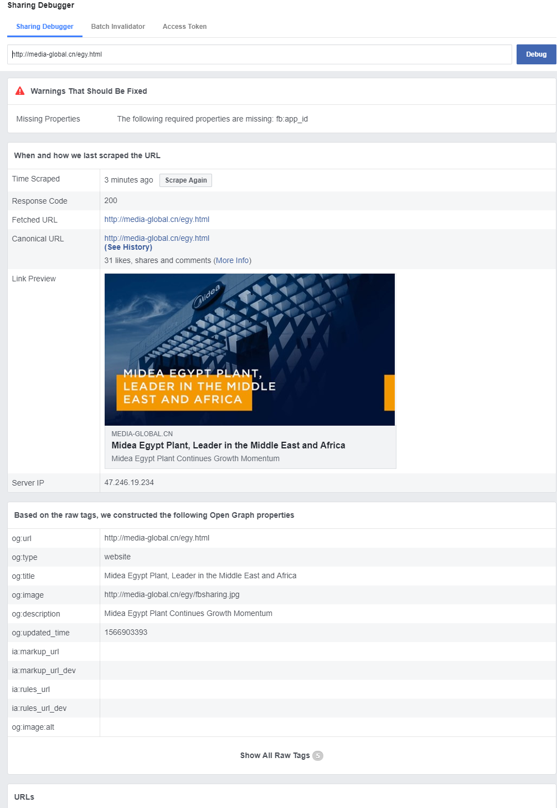
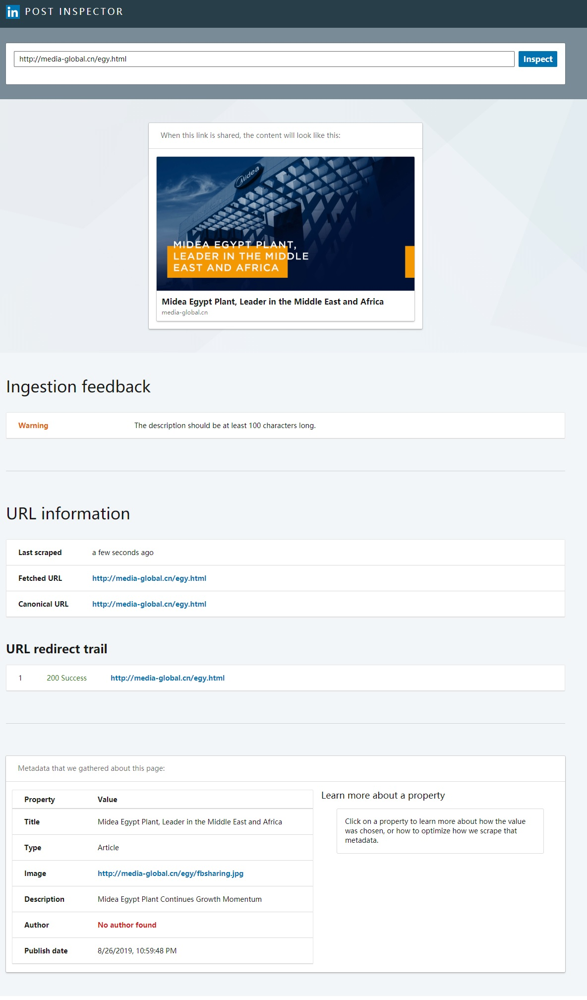

如何使用开放图谱(open graph)在facebook / LinkedIn上分享网页时显示卡片
Create At: 2019-08-27最近做了个案例，客户要求分享在facebook和linkedin上的网页链接是可以显示成卡片样式的。了解了一下开放图谱和使用元数据实现。
1. 基础
最近做了个案例，客户要求分享链接在facebook上是这种卡片式的：
找了一下资料，一个叫facebook开放图谱的api，可以实现这种效果。实际上就是用的HTML的元数据(meta data)标签放入指定内容，这样facebook的爬虫就能抓取并展现出来。实际上linkedin也支持这样的元数据并展示成卡片样式：
facebook和linkedin官方给出了文档，应该加入怎样的元数据。
基本的就是如下：
<meta property="og:url" content="点击卡片打开的链接" />
<meta property="og:title" content="显示的卡片标题" />
<meta property="og:description" content="显示的卡片描述" />
<meta property="og:image" content="显示的缩略图 / banner图" />这四个元数据是两个站都支持的，也是最基本的，只要有这四个元素就可以显示出最基本的样式：
2. 调试工具
在加上元数据之后可能由于facebook和linkedin的爬虫还没抓取，所以分享出来还是只是一个纯文字的链接。所以这里说一下怎么更快的让这两个站去抓链接以生成开放图谱的卡片。
在我粗略的实验看来，这两个站的策略似乎是有一定分享量才会去抓页面信息，主动抓取似乎得等他们去刷新。
这里有两个工具：一个是facebook的sharing debugger，一个是linkedin的post inspector，这两工具可以查看预览你的网址在这两个站分享出来的样式。
facebook的sharing debugger可以根据现有的网页内容给出他们实际所获取到的元数据信息，并给出预览。同时你也可以点击Time Scraped的右边的Scrape Again按钮重新让他们获取一次信息。
linkedin的post inspector可以给出关于网页内容相关的建议，比如图片尺寸小了、描述太短了等等的，相比facebook只会给出技术方面建议要好得多。
